NumPy: Numerical Arrays and Matrixes#

NumPy provides multidimensional arrays and tools for numerical calculations. In energy analysis, we use it to process demand profiles, calculate energy, and compare scenarios.
Official starting points: beginner guide and reference.
Your task#
Create 03-numpy.ipynb. Analyse the fictional demand of three buildings, calculate consumption and costs, and evaluate a demand-reduction scenario. Run the examples in order and explain the units of each result in Markdown cells.
Complete Python Fundamentals first, and select Python (managing-data) as your kernel to run the lines of code in your notebook.
Learning objectives#
By the end, you should be able to:
Describe array shape, axes, size, and data type.
Select values without unintentionally changing the original data.
Explain and use vectorised calculations.
Aggregate demand and energy along the correct axis.
Apply broadcasting and Boolean masks.
Identify missing values and explain their effect on results.
Import NumPy#
import numpy as np
np is a conventional alias. Import it whenever you start a new kernel session. This lesson needs no plotting library.
Our example dataset#
Suppose we have the average electricity demand of three buildings during four consecutive one-hour intervals. Each row represents a building. Each column represents an interval.
Building |
Interval 1 |
Interval 2 |
Interval 3 |
Interval 4 |
|---|---|---|---|---|
A |
2 |
3 |
5 |
4 |
B |
4 |
4 |
6 |
6 |
C |
1 |
2 |
2 |
3 |
All values are average power in kW. These are invented measurements
for learning purposes.
Create the dataset:
building_names = ["A", "B", "C"]
demand_kw = np.array(
[
[2.0, 3.0, 5.0, 4.0],
[4.0, 4.0, 6.0, 6.0],
[1.0, 2.0, 2.0, 3.0],
]
)
interval_hours = 1.0
interval_number = np.arange(1, 5)
print(demand_kw)
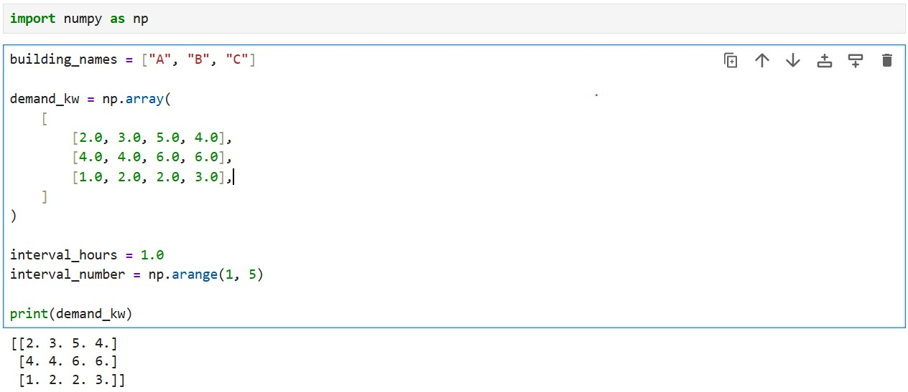
Understand NumPy arrays#
A NumPy array is a collection of values organised along one or more dimensions.
A one-dimensional array can represent one building’s demand over time.
A two-dimensional array can represent several buildings over time.
Additional dimensions can represent scenarios, years, or other categories.
Python lists can also contain nested lists. NumPy adds explicit shape information and operations designed for numerical arrays.
Shape, dimensions, size, and type#
Inspect the dataset:
print("Shape:", demand_kw.shape)
print("Dimensions:", demand_kw.ndim)
print("Number of values:", demand_kw.size)
print("Data type:", demand_kw.dtype)
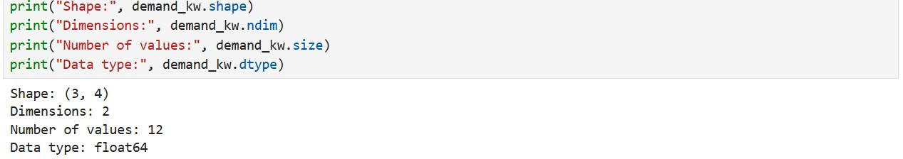
The shape is (3, 4): three rows and four columns.
Attribute |
What it tells us |
|---|---|
|
Length of each dimension |
|
Number of dimensions |
|
Total number of elements |
|
Data type used to store the elements |
An ordinary numerical array uses one data type for all its elements.
Choosing an appropriate type matters: integer arrays cannot preserve fractional values when those values are assigned to them.
For example:
integer_values = np.array([1, 2, 3], dtype=int)
integer_values[0] = 1.8
print(integer_values)
The first value becomes 1, not 1.8. This happened because you defined “integer_values” as an array using only integer data.
For measurements that may contain decimals, use a floating-point array:
decimal_values = np.array([1, 2, 3], dtype=float)
decimal_values[0] = 1.8
print(decimal_values)
Converting text to numbers also requires checking that the text contains
valid numerical values. Changing a data type does not automatically
correct invalid or inconsistent data.
Create arrays#
Several functions help construct arrays without entering every value.
# Four zeros
empty_profile = np.zeros(4)
print(f"An empty demand profile with four values:\n{empty_profile}\n")
# A three-row, four-column array of ones
scaling_template = np.ones((3, 4))
print(f"A scaling template with three rows and four columns:\n{scaling_template}\n")
# Four entries containing the same electricity price
constant_price = np.full(4, 0.25)
print(f"Electricity prices for four intervals (EUR/kWh):\n{constant_price}\n")
# Interval numbers: the stopping value is excluded
intervals = np.arange(1, 5)
print(f"Interval numbers from 1 up to, but excluding, 5:\n{intervals}\n")
# Five evenly spaced values, including both endpoints
capacity_options_kw = np.linspace(0, 10, 5)
print(f"Five capacity options between 0 and 10 kW:\n{capacity_options_kw}\n")
np.arange() is convenient when you know the step size.
np.linspace() is convenient when you know the number of values.
Reproducible random values#
Random numbers can help create practice datasets:
rng = np.random.default_rng(42)
practice_values = rng.uniform(0, 10, size=(3, 4))
print(practice_values)
The seed, 42, makes the sequence reproducible when the generator is created again in the same software setup. These values are synthetic or randomly generated data.
Select values with indexing and slicing#
For a two-dimensional array, use:
array[row, column]
Indices start at zero:
# Building B, interval 3
print(demand_kw[1, 2])
The result is 6.0.
A colon selects all entries along a dimension:
# All intervals for building A
print(demand_kw[0, :])
# All buildings during interval 2
print(demand_kw[:, 1])
Select a smaller block with slices:
# Buildings A and B, first two intervals
print(demand_kw[:2, :2])
The stopping index is excluded.

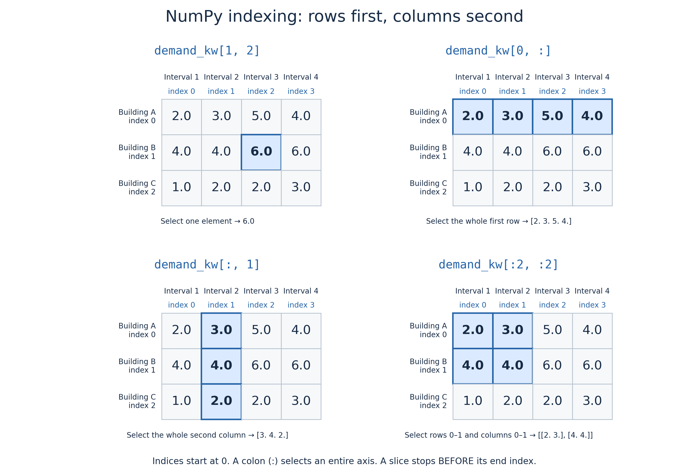
Fig. 1 NumPy selects rows first and columns second. Indices start at zero, and the stopping index of a slice is excluded.#
Views and copies#
Basic slicing usually creates a view into the original array. Changing the view can therefore change the original data. Use .copy() when you need an independent selection:
building_a_copy = demand_kw[0, :].copy()
building_a_copy[0] = 99
print(demand_kw[0, 0])
The original value remains 2.0. This distinction matters when preserving raw measurements.

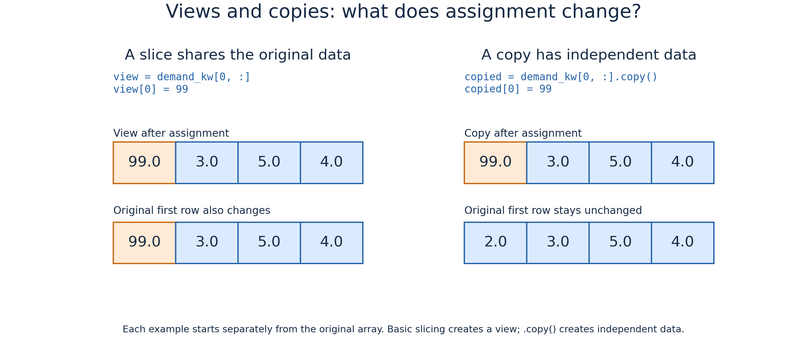
Fig. 2 Basic slicing shares data with the original array. Calling .copy()
creates independent data. Each example starts from the original array.#
Vectorised operations#
A vectorised operation applies a calculation to an array without requiring you to write a Python loop for each element.
For example, suppose we have average electricity demand for four one-hour intervals:
power_kw = np.array([2.0, 3.0, 5.0, 4.0])
To calculate a scenario with 10% lower demand, we could process each
value separately using a loop:
reduced_values = []
for value in power_kw:
reduced_values.append(value * 0.90)
print(reduced_values)
With NumPy, we can express the same calculation directly:
reduced_power_kw = power_kw * 0.90
print(reduced_power_kw)
The result is:
[1.8 2.7 4.5 3.6]
NumPy multiplies each element by 0.90 and returns a new array.
The original power_kw array remains unchanged.

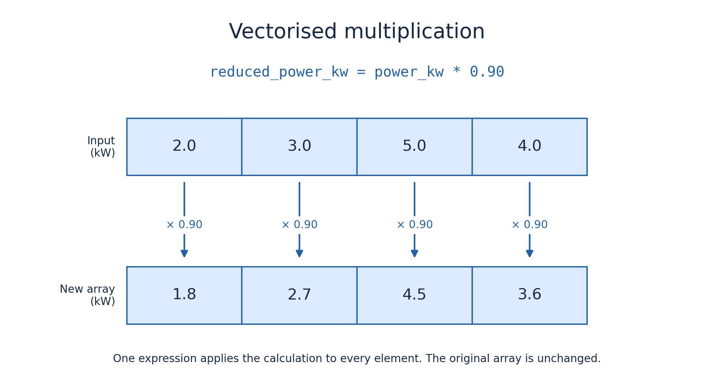
Fig. 3 One vectorised expression multiplies every element by 0.90, producing a new array with 10% lower values.#
Why use vectorised operations?#
Vectorisation makes numerical code more concise and often easier to read: the instruction expresses the calculation for the whole dataset. For numerical arrays, NumPy performs many operations using compiled implementations rather than repeatedly executing a loop in Python. This often improves performance, particularly for large datasets. However, performance still depends on the operation, data types, and memory required. Vectorisation does not mean that no iteration happens internally. It means that NumPy handles the element-by-element work for us.
Operations between arrays#
We can also calculate with corresponding elements of two arrays:
generation_kw = np.array([1.0, 4.0, 3.0, 6.0])
balance_kw = generation_kw - power_kw
print(balance_kw)
The result is:
[-1. 1. -2. 2.]
Each position compares generation and demand for the same interval:
A positive balance indicates a surplus.
A negative balance indicates a deficit.
Zero indicates that generation matches demand.
The arrays must have compatible shapes. Their entries must also represent matching observations: NumPy matches positions, not timestamps or building identifiers.
Functions can also be vectorised#
Many NumPy functions operate element by element:
absolute_balance_kw = np.abs(balance_kw)
print(absolute_balance_kw)
This returns the magnitude of each imbalance:
[1. 1. 2. 2.]
We can also prevent negative values in a calculated series:
surplus_kw = np.maximum(balance_kw, 0)
print(surplus_kw)
The result is:
[0. 1. 0. 2.]
np.maximum() compares corresponding values and selects the larger one.
Here, every negative balance is replaced with zero, leaving only surpluses.
NumPy arrays behave differently from lists#
The same operator can have different meanings depending on the data type:
print([2, 3] * 2)
print(np.array([2, 3]) * 2)
The list repeats its contents:
[2, 3, 2, 3]
While the NumPy array multiplies its numerical values:
[4 6]
This is another reason to check data types before applying calculations.
Convert power to energy#
The examples below apply vectorised operations to our two-dimensional building-demand dataset.#
Average power multiplied by interval duration gives energy:
energy_kwh = demand_kw * interval_hours
print(energy_kwh)
Because each interval lasts one hour, the numerical values are unchanged.
The units have changed from kW to kWh.
In case of managing a dataset with 15-minute intervals, the duration would be 0.25 hours. Always check the time resolution before calculating energy.
Compare a demand-reduction scenario#
Suppose every value is reduced by 10%:
reduced_demand_kw = demand_kw * 0.90
savings_kw = demand_kw - reduced_demand_kw
print(savings_kw)
The original array is unchanged because we assigned the calculation to a new variable.
Element-wise and matrix multiplication#
NumPy uses * to multiply corresponding values and @ to multiply
rows by columns and sum the products.
Consider two small arrays:
a = np.array([[1, 2],
[3, 4]])
b = np.array([[5, 6],
[7, 8]])
Element-wise multiplication: *#
Each value is multiplied by the value at the same position:
print(a * b)
[[ 5 12]
[21 32]]
For example, the top-left value is 1 * 5 = 5.
No products are added together.
Matrix multiplication: @#
Each row of a is combined with each column of b: multiply matching entries, then add their products.
print(a @ b)
[[19 22]
[43 50]]
For example, the top-left value combines the first row [1, 2]
with the first column [5, 7]:
1 * 5 + 2 * 7 = 19
For matrix multiplication, the number of columns in the first array must match the number of rows in the second.
Our power-to-energy and demand-reduction examples use *, because we want to scale each value individually.
Summarise data along an axis#
A reduction combines values using an operation such as a sum, mean, minimum, or maximum.
For our array:
Axis 0 represents buildings.
Axis 1 represents time intervals.
Reducing an axis combines values along that dimension.
Total demand during each interval#
Sum over buildings:
total_demand_kw = demand_kw.sum(axis=0)
print(total_demand_kw)
The result is:
[ 7. 9. 13. 13.]
The building dimension has been combined, leaving one value per interval.

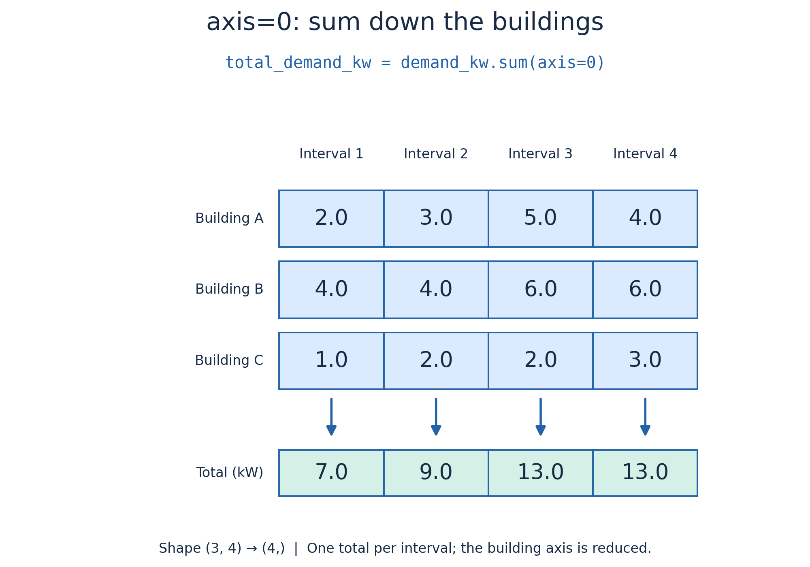
Fig. 4 Using axis=0 combines the buildings, leaving one total demand per interval:
7, 9, 13, and 13 kW.#
Energy consumed by each building#
Sum energy over time:
building_energy_kwh = energy_kwh.sum(axis=1)
print(building_energy_kwh)
The result is:
[14. 20. 8.]

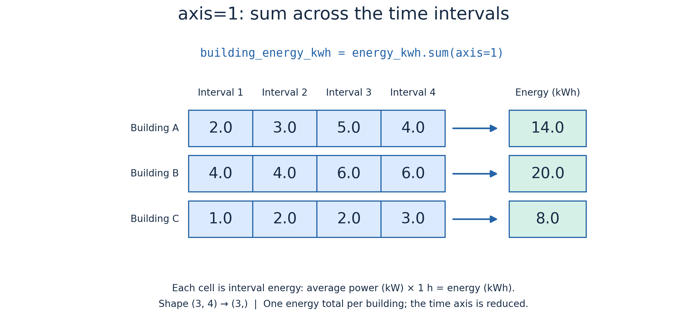
Fig. 5 Using axis=1 combines the time intervals, leaving one energy total per
building: 14, 20, and 8 kWh. Each interval lasts one hour.#
Other summaries#
print("Mean power per building:", demand_kw.mean(axis=1))
print("Peak power per building:", demand_kw.max(axis=1))
print("Total energy:", energy_kwh.sum())
print("Peak combined demand:", total_demand_kw.max())
Be careful when describing a peak. The maximum of the combined profile represents simultaneous demand. Adding individual building peaks can give a different result if those peaks occur at different times.

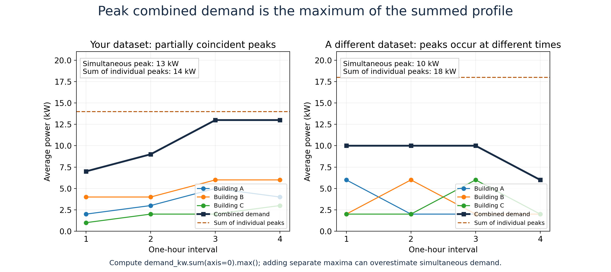
Fig. 6 Calculate simultaneous peak demand by summing the buildings at each interval and then finding the maximum. In our dataset, this gives 13 kW, while adding the individual building peaks gives 14 kW.#
Broadcasting: match calculations to dimensions#
Broadcasting allows certain differently shaped arrays to work together.
Suppose electricity prices vary across our four intervals:
price_eur_per_kwh = np.array([0.20, 0.25, 0.40, 0.30])
The energy array has shape (3, 4). The price array has shape (4,).
cost_eur = energy_kwh * price_eur_per_kwh
print(cost_eur)
Each column is multiplied by its corresponding interval price. The same price schedule applies to every building.
building_cost_eur = cost_eur.sum(axis=1)
print(building_cost_eur)
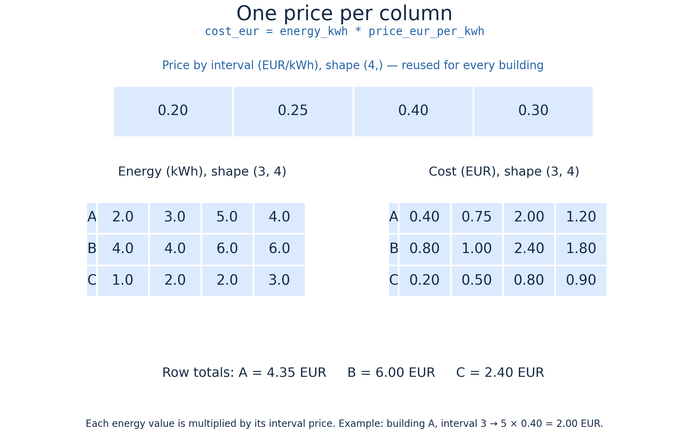
Apply one factor per building#
Now suppose each building has its own scenario factor:
building_factors = np.array([0.90, 1.10, 1.00])
We want one factor per row. Add a dimension so its shape becomes (3, 1):
scenario_demand_kw = demand_kw * building_factors[:, np.newaxis]
print(scenario_demand_kw)
Each factor now applies across all four intervals of its building.
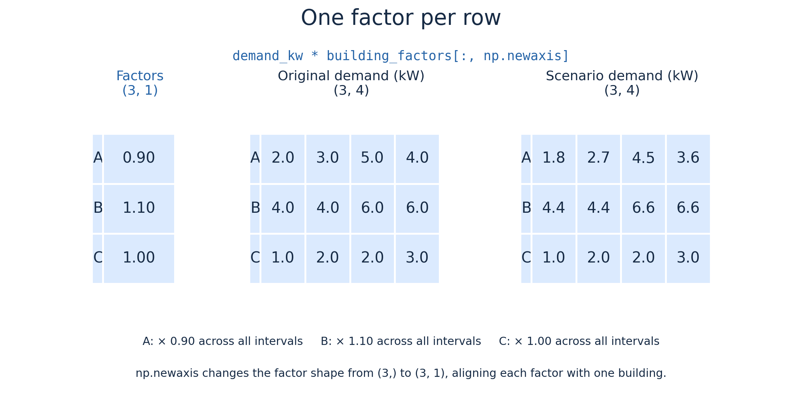
Check compatibility#
Broadcasting compares dimensions from right to left.
Dimensions are compatible when their lengths match or one has length one.
Shapes |
Compatible? |
Interpretation |
|---|---|---|
|
Yes |
One value per interval |
|
Yes |
One value per building |
|
No |
Last dimensions differ: 4 and 3 |
A compatible shape does not guarantee a meaningful calculation.
You must also check what each axis and value represents.
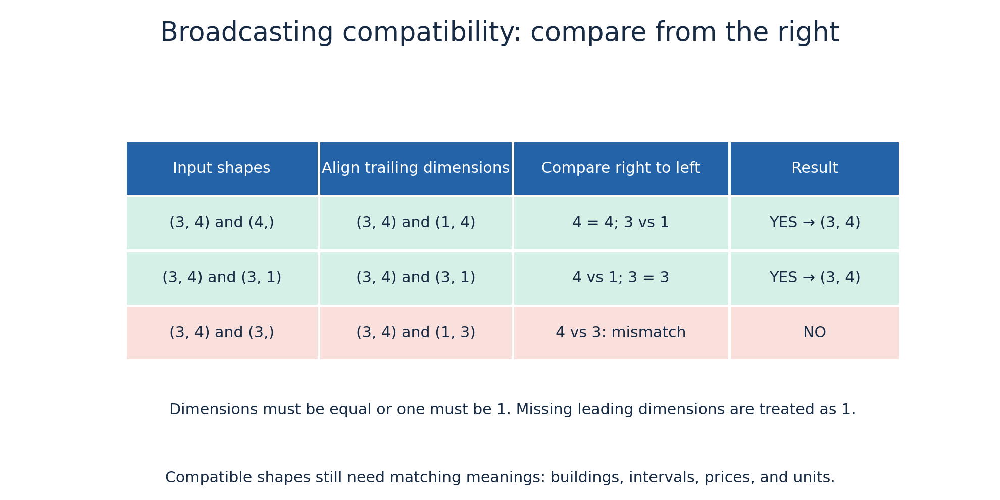
Read more in the official broadcasting guide.
Filter values with Boolean masks#
A comparison applied to an array produces an array of Boolean values:
high_demand_mask = total_demand_kw > 10
print(high_demand_mask)
Use the mask to select the matching values:
print(total_demand_kw[high_demand_mask])
print(interval_number[high_demand_mask])
Count matching intervals:
print(np.count_nonzero(high_demand_mask))
Combine array conditions using &, |, and ~:
selected_intervals = (
(total_demand_kw > 8)
& (price_eur_per_kwh < 0.35)
)
print(interval_number[selected_intervals])
Use parentheses around each comparison. The scalar operators and and or do not perform these element-wise array comparisons.
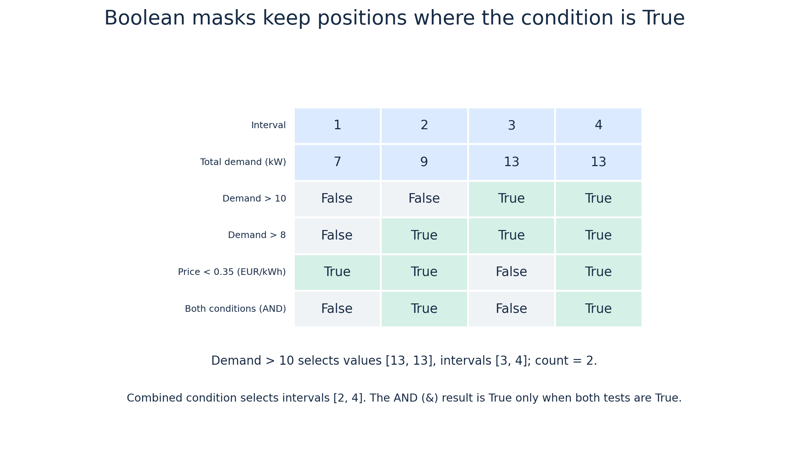
Missing measurements#
Numerical arrays often use np.nan for a missing floating-point value:
incomplete_measurements = np.array([2.0, np.nan, 4.0])
print(np.isnan(incomplete_measurements))
print(np.mean(incomplete_measurements))
print(np.nanmean(incomplete_measurements))
mean() propagates the missing value here. nanmean() calculates the mean using the available values.
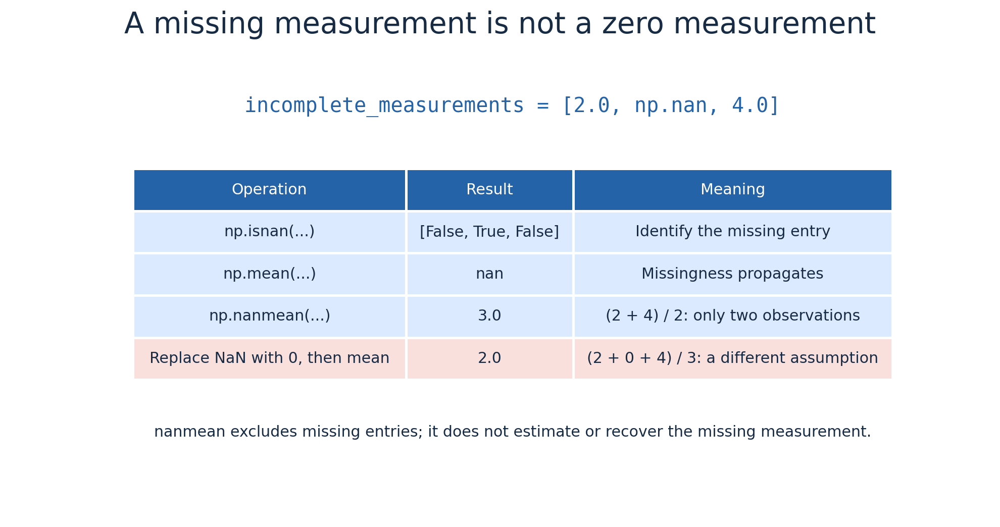
Ignoring missing values changes the data supporting your result.
Record how missing observations were handled, and do not automatically replace them with zero.
Optional practice#
Consumption and cost#
Create a second dataset with two buildings and six consecutive half-hour intervals. Use positive decimal values for average power in kW.
Inspect its shape and data type.
Calculate energy per interval and total energy per building.
Create six prices in EUR/kWh and calculate cost per building.
Explain why summing kW values alone does not calculate kWh.
Peak demand and filtering#
Calculate combined power for each interval.
Choose a threshold and identify intervals above it.
Calculate how many hours those intervals represent.
Compare the peak combined demand with the sum of individual peaks.
Scenario comparison#
Reduce the first building’s demand by 15% and the second by 5%, using a factor array of shape (2, 1).
Preserve the original array.
Calculate savings in kWh and EUR.
Explain which assumptions determine the savings.
Missing data#
Insert np.nan into a copy of your dataset. Compare mean() with nanmean(), and explain why treating missing consumption as zero can underestimate energy.
Check your work#
For the example dataset, combined power should be [7, 9, 13, 13] kW, and total energy by building should be [14, 20, 8] kWh. These are separate quantities even when a one-hour interval makes numerical values coincide.
Restart the kernel and run all cells. Explain the meaning of each axis and verify that original measurements remain unchanged.